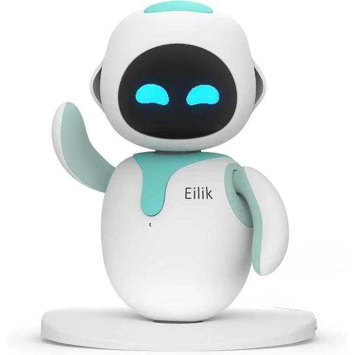
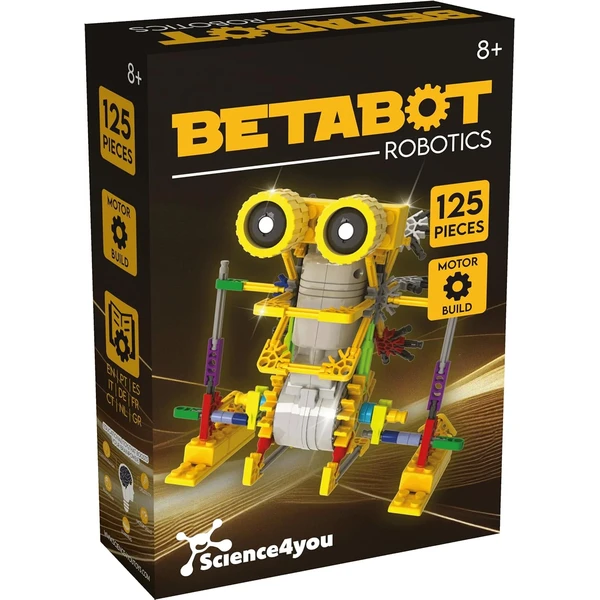
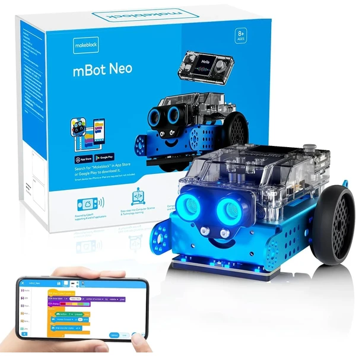
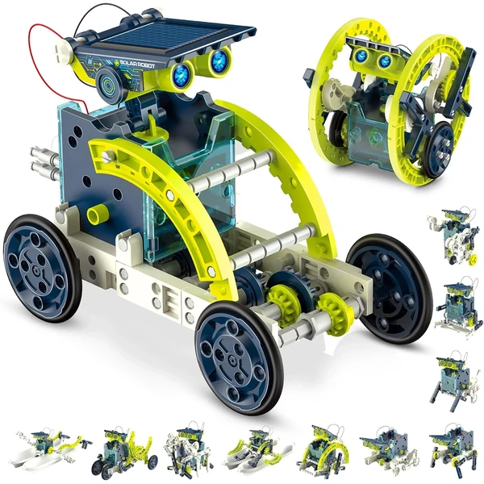
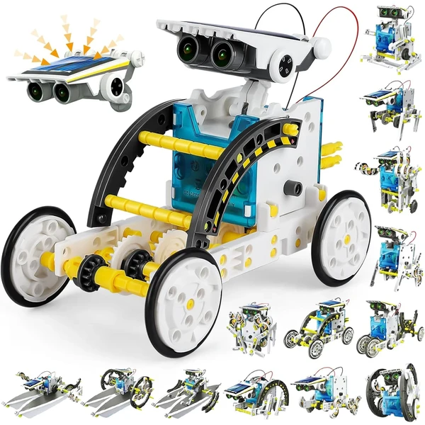

A los 10 años los kits de robótica más completos permiten crear proyectos con varios sensores y comportamientos combinados, acercándose ya a una programación real por bloques. El niño disfruta resolviendo retos concretos, como hacer que el robot esquive obstáculos o siga una línea, y suele compartir sus avances con otros. En esta selección encontrarás juguetes de robótica pensados para esta edad.
¿Qué desarrolla la robótica a los 10 años?
Resolver retos concretos, como esquivar obstáculos o seguir una línea, acerca al niño a la programación real.
- Pensamiento computacional
- Pensamiento lógico
- Resolución de problemas
- Creatividad
- Autonomía
- Concentración

Eilik Robot Mascota Interactivo
Un robot de escritorio con personalidad propia que interactúa mediante gestos, sonidos y expresiones. Aprende y evoluciona con actualizaciones de software, ofreciendo reacciones distintas según cómo se le trate.
⭐ ¿Por qué nos gusta?
- ✔ Reacciona a gestos y caricias con expresiones propias.
- ✔ Interactúa con otras unidades Eilik.
- ✔ Evoluciona con actualizaciones de software.
💬 Lo que más destacan las familias
Muchos padres coinciden en que sorprende lo expresivo que resulta, casi como una mascota digital con personalidad propia. El hecho de que siga actualizándose mantiene el interés más allá de las primeras semanas.
Ver en Amazon

Science4you Robotics Betabot
Un kit de 126 piezas para construir un robot que se mueve gracias a un pequeño motor incorporado. Incluye libro educativo en varios idiomas para guiar el montaje paso a paso.
⭐ ¿Por qué nos gusta?
- ✔ 126 piezas para construir un robot funcional.
- ✔ Motor incorporado que hace que se mueva.
- ✔ Combina construcción y robótica educativa.
💬 Lo que más destacan las familias
Entre los comentarios más habituales aparece lo satisfactorio que resulta ver moverse el robot tras haberlo montado con las propias manos. Es un buen punto de partida para quienes se inician en la robótica.
Ver en Amazon

Clementoni Evolution Robot 2.0
Un robot programable con app propia, sensores infrarrojos y brazos móviles capaces de levantar pequeños objetos. Incluye motores eléctricos y luces LED para completar la experiencia.
⭐ ¿Por qué nos gusta?
- ✔ Se controla y programa desde una app.
- ✔ Brazos móviles para levantar objetos.
- ✔ Sensores infrarrojos y luces LED integradas.
💬 Lo que más destacan las familias
Una de las cosas más comentadas es lo completo que resulta para introducirse en la programación básica desde la propia app. Los brazos móviles también se mencionan como un detalle que sorprende gratamente.
Ver en Amazon

Science4you Robotics Deltabot
Un kit de 117 piezas para construir un robot que se mueve gracias a un motor incorporado, con libro educativo en varios idiomas. Combina construcción manual y resultado interactivo.
⭐ ¿Por qué nos gusta?
- ✔ 117 piezas para construir un robot funcional.
- ✔ Motor incorporado que hace que se mueva.
- ✔ Libro educativo en varios idiomas.
💬 Lo que más destacan las familias
Se repite bastante el comentario de que combina bien el montaje manual con el resultado de un robot que realmente se mueve. Ideal para quienes disfrutan tanto de construir como de jugar después.
Ver en Amazon

Sillbird Robot 5 en 1
Un kit de 488 piezas para construir cinco modelos distintos: robot, dinosaurio, coche, tanque y más, con dificultad progresiva. Se controla por app o mando a distancia según se prefiera.
⭐ ¿Por qué nos gusta?
- ✔ Cinco modelos distintos con las mismas piezas.
- ✔ Se controla por app o por mando.
- ✔ Dificultad progresiva según el modelo elegido.
💬 Lo que más destacan las familias
Lo que más suele gustar es poder elegir entre varios modelos distintos según el nivel de reto que se busque. También se valora tener dos formas de control, con app o con mando, según el momento.
Ver en Amazon

Makeblock mBot2 Robot Programable
Un robot programable compatible con Scratch y Python, con sensores integrados y conexión WiFi. Permite aprender programación real mientras se construye y se juega con comandos de voz.
⭐ ¿Por qué nos gusta?
- ✔ Compatible con Scratch y Python.
- ✔ Responde a comandos de voz.
- ✔ Conexión WiFi para explorar IoT.
💬 Lo que más destacan las familias
Un detalle que aparece una y otra vez es lo bien que introduce a la programación real, más allá de los kits puramente mecánicos. Los padres valoran que crezca con el niño gracias a Python.
Ver en Amazon

Hot Bee Robot Solar Educativo
Un kit para construir 12 robots distintos que funcionan con energía solar, sin necesidad de pilas. El panel solar convierte la luz en electricidad para mover cada modelo montado.
⭐ ¿Por qué nos gusta?
- ✔ 12 robots distintos con las mismas piezas.
- ✔ Funciona con energía solar, sin pilas.
- ✔ Introduce conceptos de energías renovables.
💬 Lo que más destacan las familias
Muchos padres destacan que no dependa de pilas es un punto a favor, tanto por comodidad como por lo educativo del concepto solar. La variedad de 12 modelos distintos alarga bastante la vida útil del kit.
Ver en Amazon

Science4you Robotics Alfabot
Un kit de 238 piezas para construir un robot propio y ponerlo en marcha después. Incluye un extenso manual ilustrado para aprender robótica y electrónica paso a paso.
⭐ ¿Por qué nos gusta?
- ✔ 238 piezas para un robot más elaborado.
- ✔ Manual ilustrado para aprender robótica.
- ✔ Combina construcción y electrónica básica.
💬 Lo que más destacan las familias
Una característica muy mencionada es lo detallado del manual, que ayuda a entender no solo cómo montar sino también por qué funciona cada pieza. Se recomienda para niños con curiosidad ya despierta por la ciencia.
Ver en Amazon

Buoeuik Robot Solar 13 en 1
Un kit para construir hasta 13 robots distintos que se mueven en tierra o flotan en el agua gracias a un panel solar. No requiere baterías, solo luz solar directa para funcionar.
⭐ ¿Por qué nos gusta?
- ✔ 13 robots distintos con las mismas piezas.
- ✔ Funciona con energía solar, sin baterías.
- ✔ Algunos modelos se mueven también en el agua.
💬 Lo que más destacan las familias
Entre los comentarios más habituales aparece la sorpresa de ver los robots moverse solo con luz solar, sin depender de pilas. La variedad de trece modelos distintos ofrece mucho margen para seguir construyendo.
Ver en Amazon